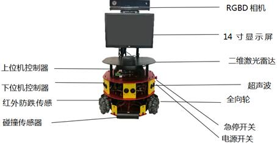
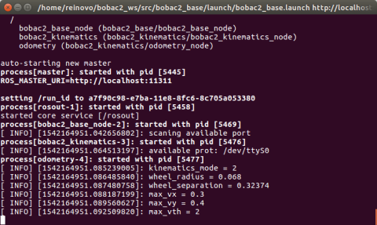
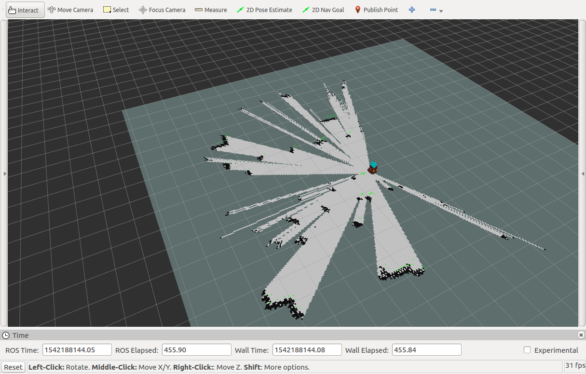
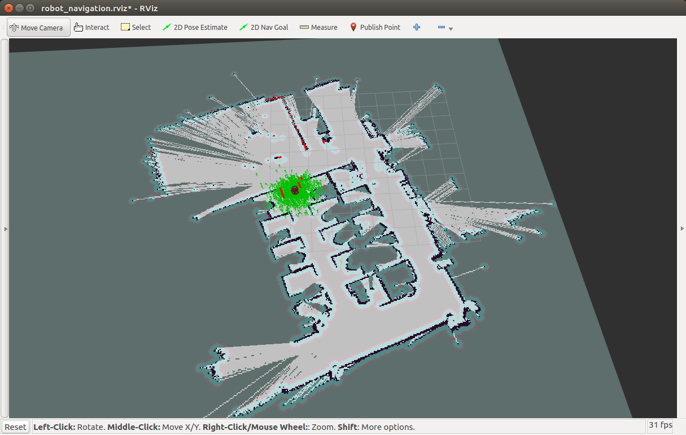
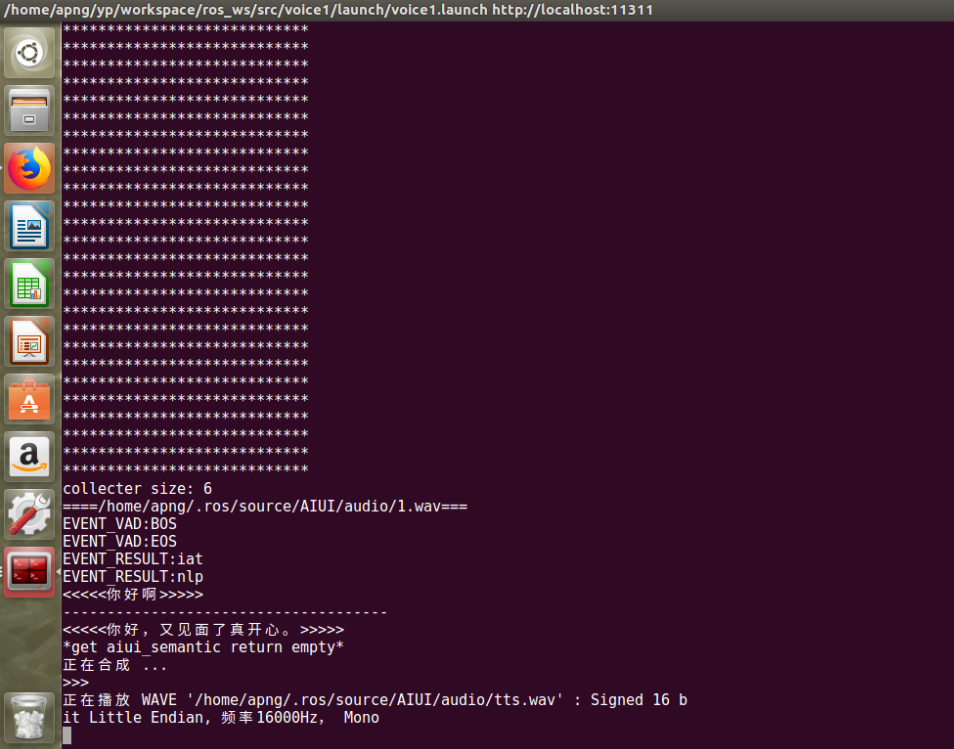
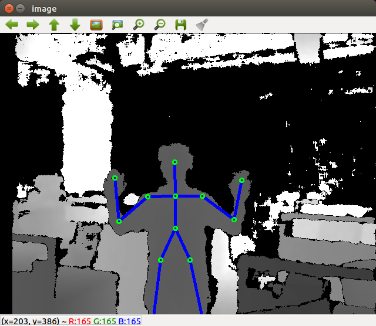
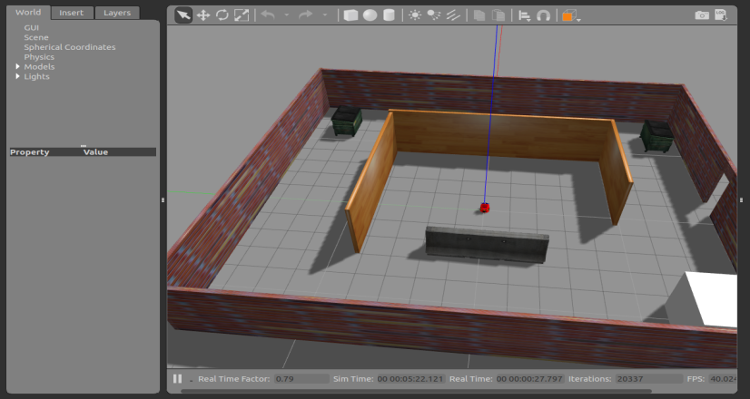
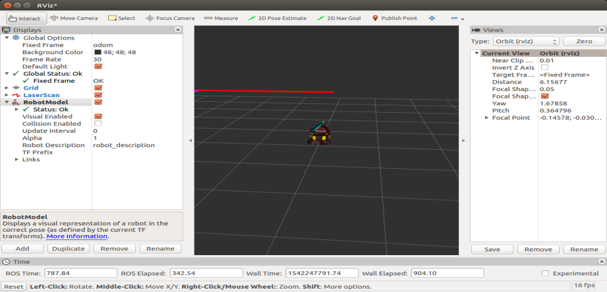

快速入门指南
1 bobac 部件熟悉
1.1 bobac 整体结构图

bobac
1.2 操作面板图

从上到下依次为急停开关、充电口、电源开关
2 手柄控制机器人移动
2.1 启动机器人底盘
在终端输入：
$ roslaunch bobac2_base bobac2_base.launch

2.2 启动手柄
插入手柄的usb头后，在新终端输入：
$ roslaunch bobac2_joy bobac2_joy.launch
若设备连接一切正常，则可以用手柄控制机器人移动。
3 地图构建与导航
3.1 启动slam建图
打开终端输入：
$ roslaunch bobac2_slam bobac2_slam.launch
窗口显示rviz界面，用手柄控制bobac在搭建的空间上移动，得到路径信息。界面上有bobac车体模型，以及雷达扫描到的相关信息；

3.2 保存地图
需要保存地图时，打开新终端输入：$ cd bobac2_ws/src/bobac2_navigation/maps(进入存放保存地图的目录)
然后再输入：$ rosrun map_server map_saver -f test1(地图名字)
查看该文件夹中是否有该地图，至此地图保存完成，可以停止建图程序
3.3 2D导航
3.1.1 更改地图文件
进入bobac2_ws/src/bobac2_navigation/launch文件夹下，在map_server.launch中更改自己要用到的地图文件
比如我要用到的地图的名字为test1，则作如下修改
<arg name="map_file" default=" $(find bobac2_navigation)/maps/test1.yaml"/>
3.1.2 导航
在终端输入：
$ roslaunch bobac2_navigation bobac2_nav.launch
先将机器人搬到地图中的位置朝向，或者使用2D Pose Estimate 在地图中标记机器人现在所在的位置朝向

使用2D Nav Goal选择导航的目标点
4 语音对话功能
确保机器人已经连上网络后，在终端输入：
roslaunch voice_apply voice_apply.launch
然后对着相机的麦克风阵列说话，bobac则会正确的对答

5 人体识别与跟踪
在终端输入：
$ roslaunch bobac2_follow bobac2_follow.launch
首先在距离机器人约两米的距离，举起两只手，等待机器人识别人体目标（可调整相机角度来改善识别效果和稳定性）。识别成功后即可放下双手，机器人将会跟随走动（由于运动中识别人体，该程序的抗干扰能力会比较差，请在单一环境下测试）。

6 可视化地图rviz与三维仿真gazebo
6.1 模拟bobac机器人移动
在gazebo中仿真bobac机器人的移动，二维激光传感器，orbbec传感器。
在终端输入：
$ roslaunch bobac2_description gazebo.launch
启动gazebo时，有可能会启动失败，重启一遍仿真即可。

此时将手柄的接收头插入主机，在新终端运行以下命令：
$ roslaunch bobac2_joy bobac2_joy.launch
运行成功，此时可以用手柄控制虚拟车体在三维空间中的移动。
6.2 查看传感器消息
运行以下命令打开rviz查看传感器发布的信息，在新终端输入：
$ rviz
rivz窗口出来以后，依据实验七完成rviz的配置

红色的线条状为二维激光数据。此时可以用手柄控制机器人运动，观察rviz中信息的变化。